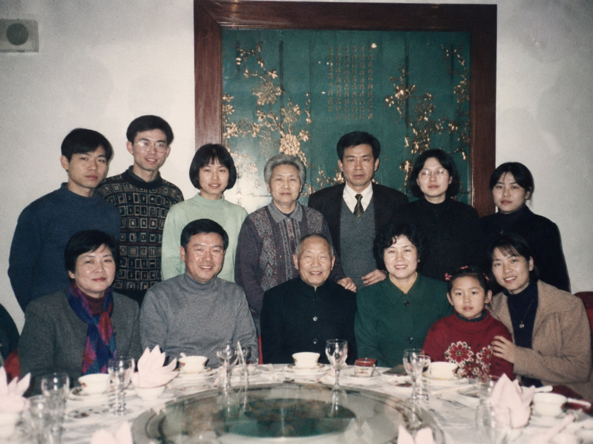

尚未选择照片
请先点击上方任意照片，AI 会根据照片旁的场景提示生成一张温柔的家庭回忆卡。
TRAE AI 创造力大赛 · 可交互最终版
「念念 NianNian」是一款面向空巢老人和异地子女的 AI 家庭记忆陪伴助手：子女点击选择老照片，AI 生成回忆卡、通话话题和陪伴摘要，老人端用超大按钮听回忆、报平安、收到家人的关心。

90 秒体验
左侧是子女端，右侧是老人端。可以按推荐步骤体验，也可以自由点击，系统会温柔提示并保持流程完整。
尚未选择照片
请先点击上方任意照片，AI 会根据照片旁的场景提示生成一张温柔的家庭回忆卡。
生成后会出现 3 个适合今晚打电话的开场话题。
等待子女选择一张老照片。
家人还没有发送新的回忆卡。
收到后可点击大按钮收听。
等待子女发送一句关心。
作品价值
不是泛泛聊天，而是从真实照片、节日、老屋、手艺和院子生活中生成可继续聊下去的话题。
老人端只有清晰大按钮，降低操作负担；子女端负责准备内容，让老人更容易使用。
Demo 不依赖复杂设备，可扩展到社区陪伴、家庭相册整理和节日关怀活动。